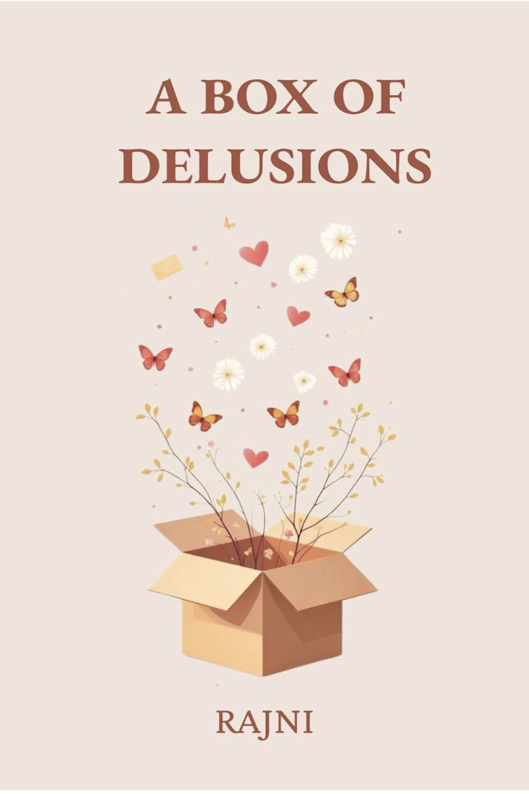

A Box Of Delusions
A Box of Delusions is a raw, rhythmic, and deeply intimate exploration of the fragile architecture of the human mind. Through a mesmerizing blend of dark lyricism and stark vulnerability, this debut poetry collection dissects the internal battles we so often fight in secret.
From the obsessive rhythms of a mind fixated on control to the quiet sanctuary of a childhood dollhouse, these poems map the landscape of modern anxiety, depression, and coping mechanisms. Here, you will encounter the self-sabotage of pulling down your own house of cards, the haunting companion of an intrusive voice traveling around the world, and the ultimate coping mechanism: pretending your deep-seated pain is just a "werewolf" your therapist could never understand.
Divided by themes of conflict, denial, obsession, and the elusive search for genuine connection, A Box of Delusions does not offer neat, wrapped-up answers. Instead, it invites you into the hallway of the subconscious-where anger guards the door, the past is locked in the attic, and love is often bartered for mere attention.
Perfect for fans of modern, emotionally resonant poetry like Sarah Kay, Rupi Kaur, and Nedra Glover Tawwab, this collection is a comforting, haunting mirror for anyone who has ever felt like a walking paradox.
Step inside the hallway. Unpack the madness. Open the box.